02
Selected Works
作品选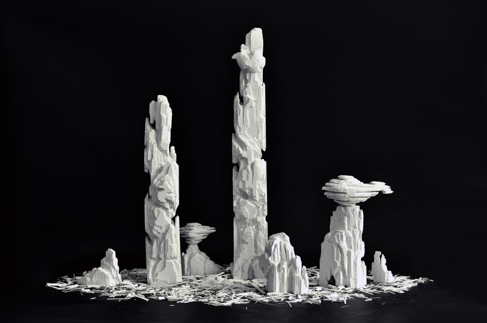
1 / 3Distant Mountains远山清韵
Selected, 13th National Art Exhibition of China
 1 / 2
1 / 2
Dream · Stone梦·石
Silver Award, National Ceramic Art Exhibition
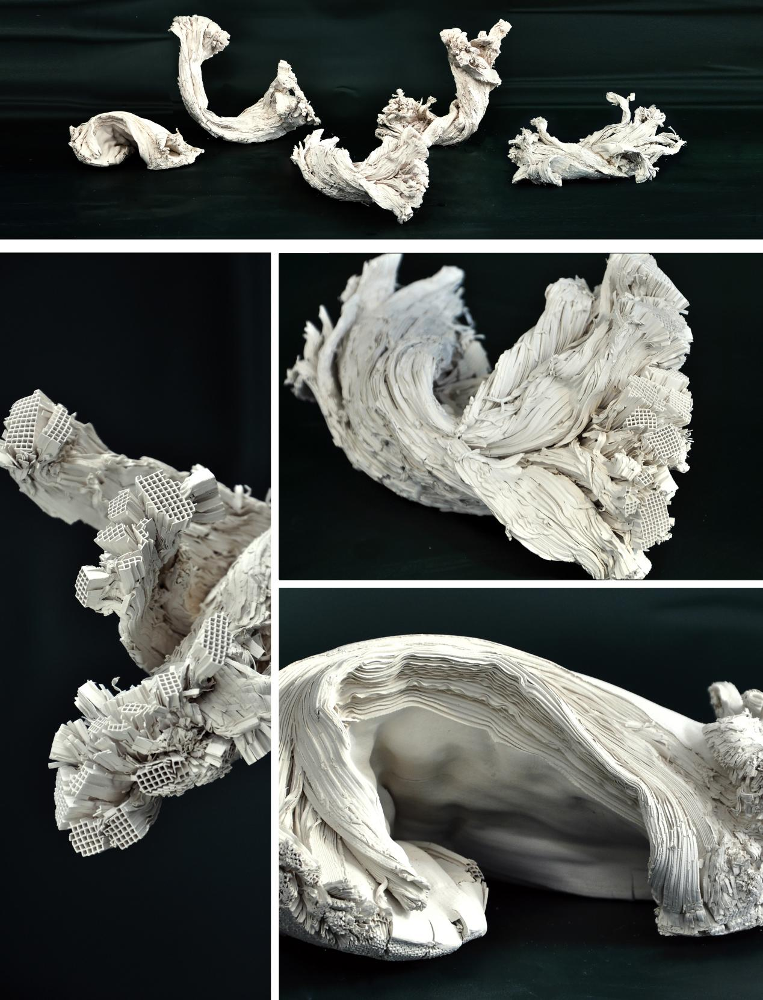
Curl蜷
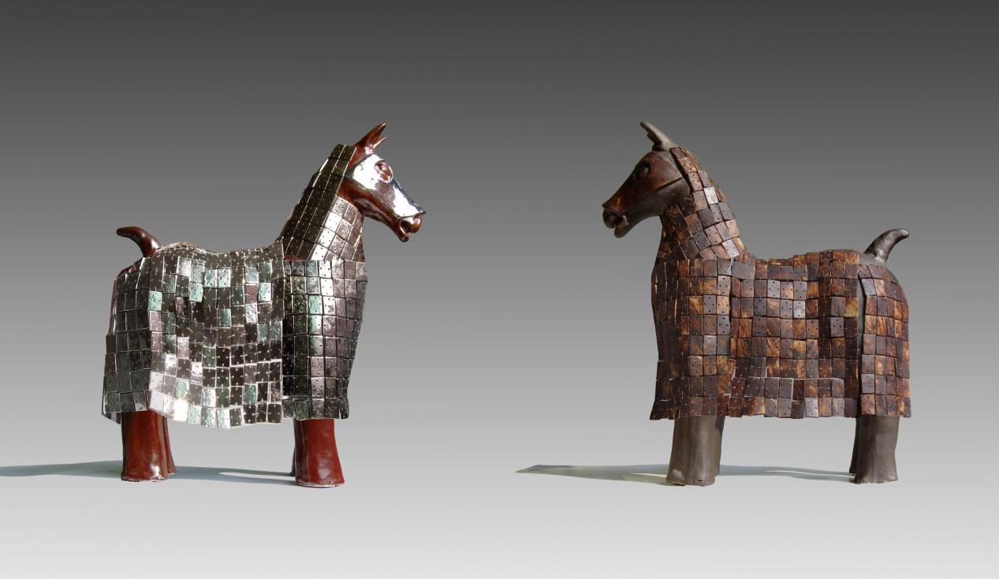
Golden Spears and Iron Steeds金戈铁马
Silver Award, 9th National Ceramic Art Design Competition, China Ceramic Industrial Association
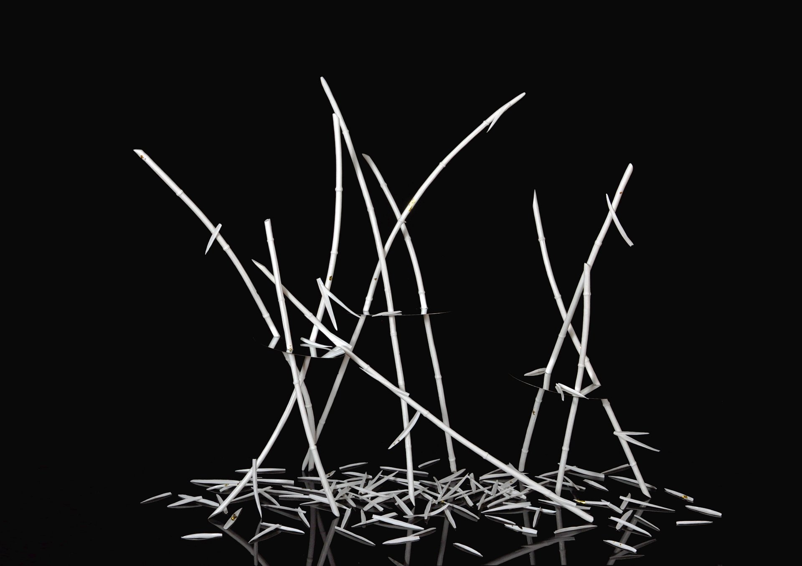
1 / 6Impression: Lake Light, Bamboo Shadow印象·湖光竹影
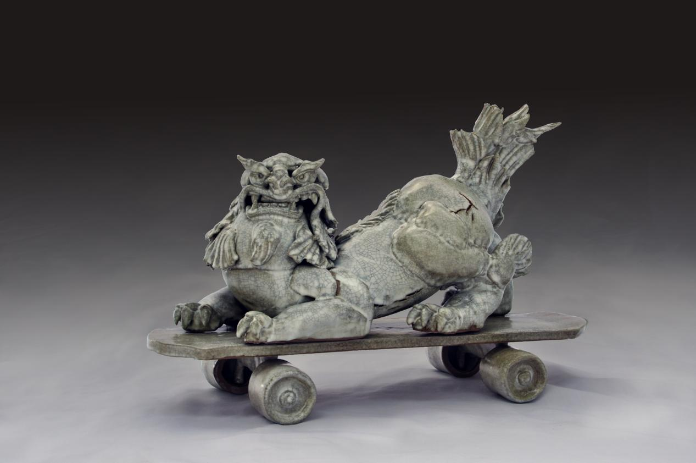
Auspicious Beast瑞兽
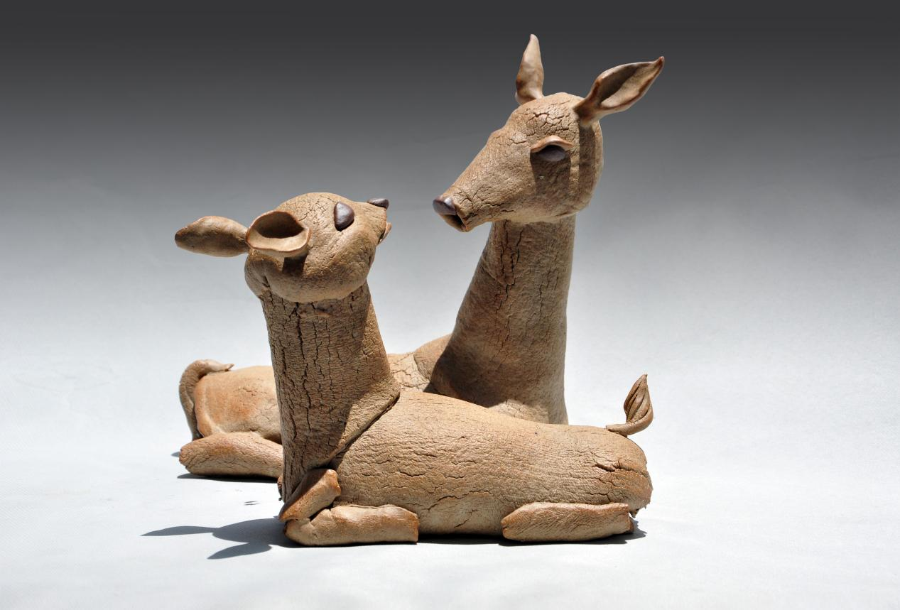
Rest休憩
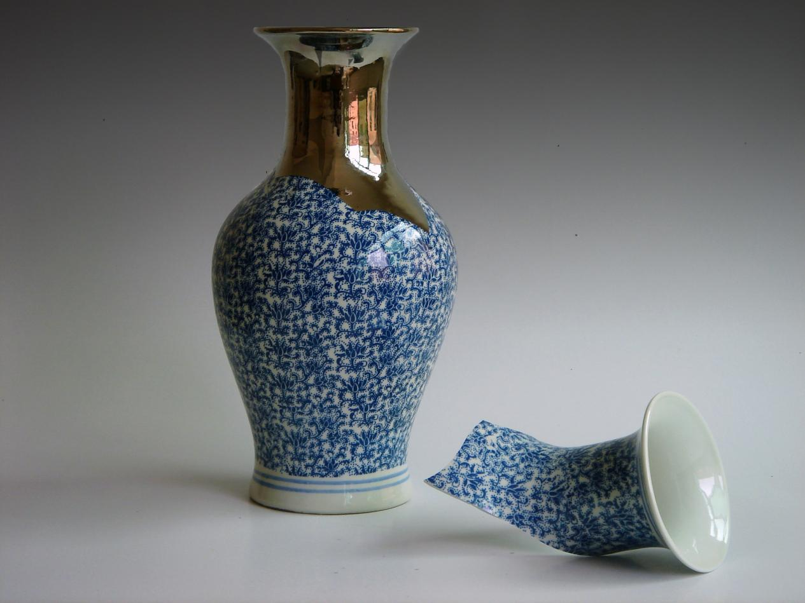
Modern Life现代生活
Collection of Shiwan Ceramic Museum
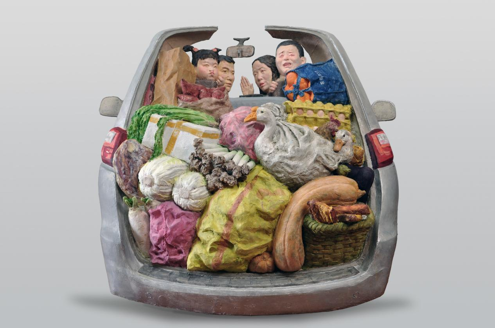
Return: To the City返城·返程
Excellence Award, 11th Jiangxi Youth Art Exhibition
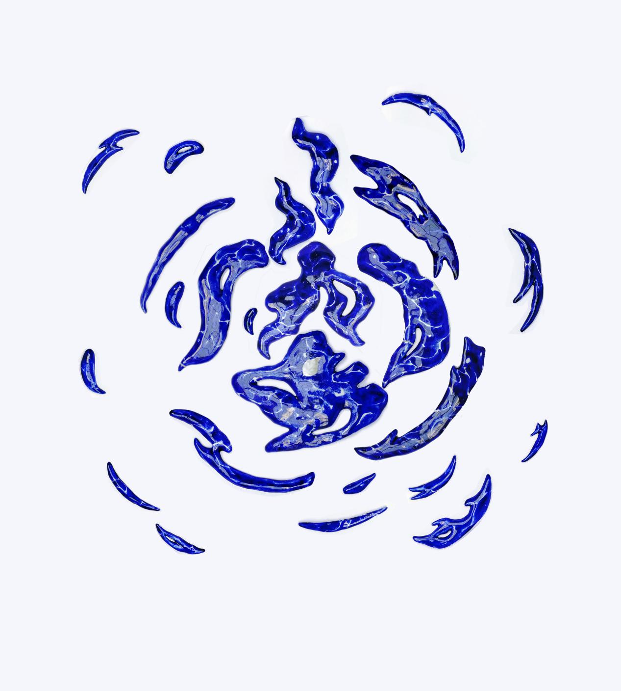
Rippling荡漾
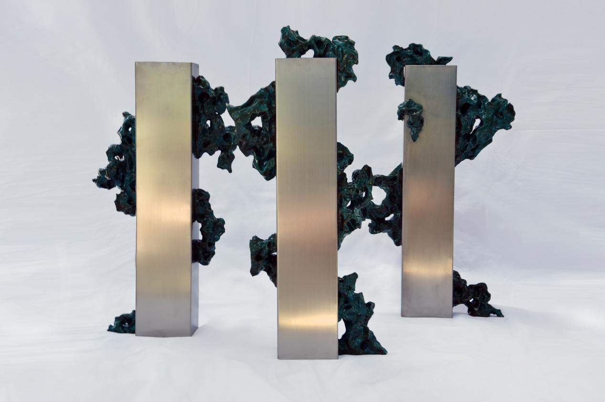
Observing Stone观石
Selected Work Award, 2020 KSBDA Fall International Conference, Korea
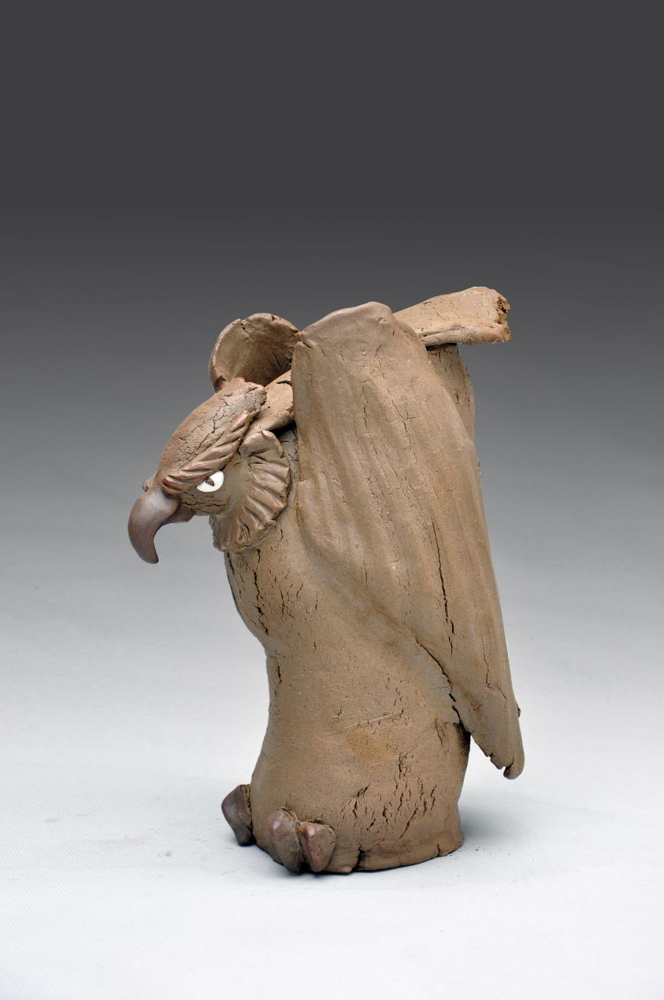
Tranquility宁静致远
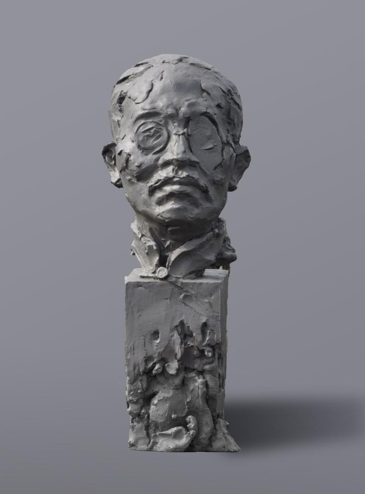
Cai Yuanpei蔡元培
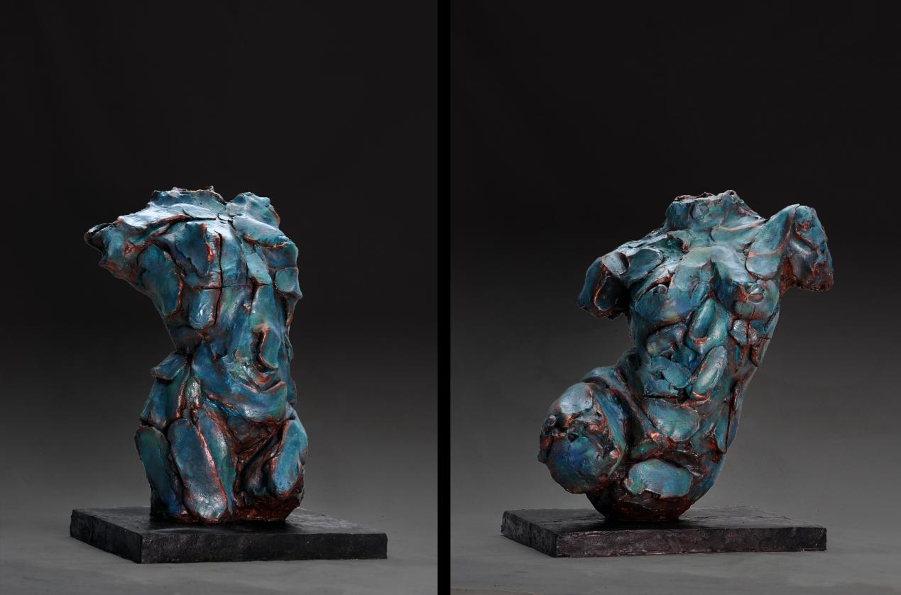
Serenity Series谧